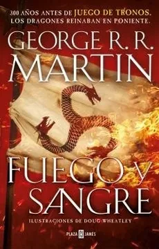
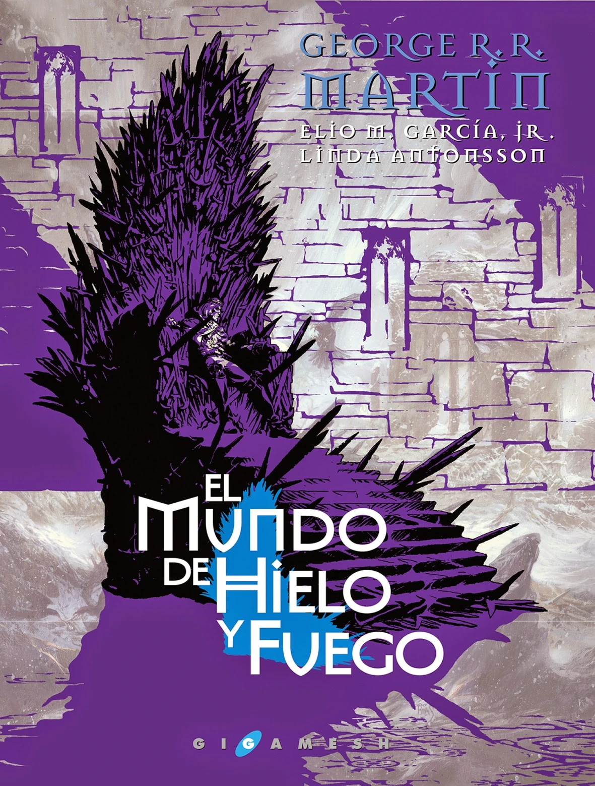
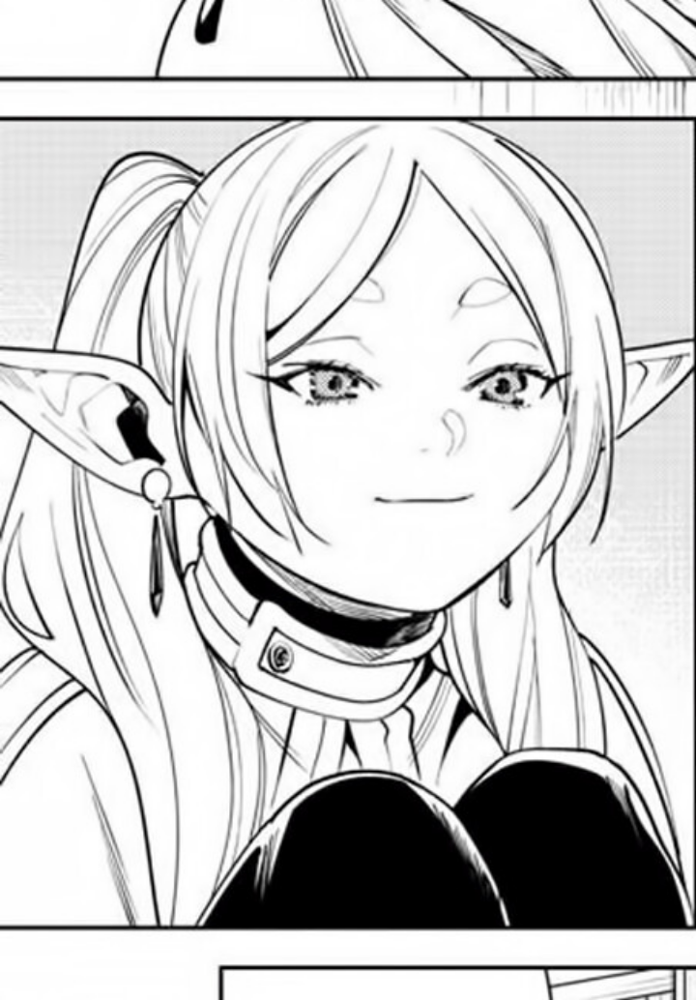
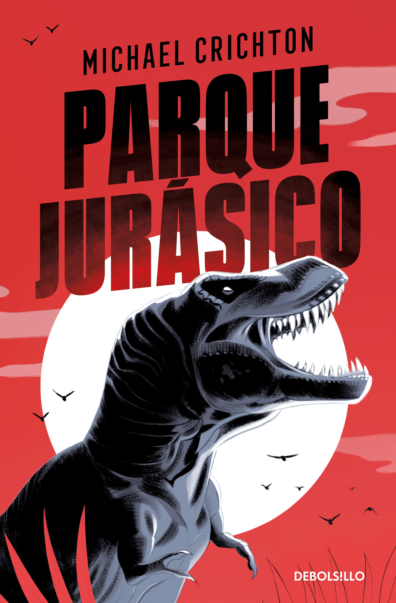
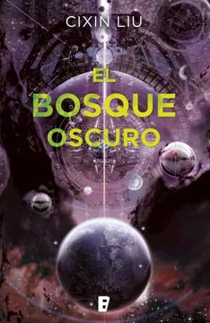

Mis pendientes para este año
En esta sección encontrarás los libros, mangas o comics que tengo planeado leer próximamente. Aunque hay otras obras que también quiero explorar, he decidido dejar fuera de esta lista aquellas que aún no tengo en mis manos, ya que hay títulos que me entusiasman mucho y ya están esperando en mi estantería.

Fuego y sangre
George RR Martin
"Fuego y Sangre" cuenta la historia de la familia Targaryen, desde su llegada a Rocadragón hasta la guerra civil conocida como la Danza de los Dragones. El libro explora el ascenso de Aegon I, creador del Trono de Hierro, y los eventos que marcaron el destino de los Targaryen, todo narrado por un maestre erudito. Con ilustraciones inéditas, es una crónica esencial para los fans de Juego de Tronos.

El mundo de hielo y fuego
George RR Martin
"El mundo de hielo y fuego" es una obra exhaustiva sobre la historia de Poniente y las tierras lejanas, llena de material inédito de George R. R. Martin. Con más de 170 ilustraciones y mapas a todo color, el libro ofrece una visión profunda de las batallas, rivalidades y rebeliones que dieron forma al mundo de Juego de Tronos. Incluye árboles genealógicos de casas como Stark, Lannister y Targaryen, además de un análisis detallado de la cultura e historia de Poniente.

Frieren
Kanehito Yamada
"Frieren: Beyond Journey's End" sigue a Frieren, una maga elfa que derrotó al Rey Demonio junto a un grupo de héroes, trayendo paz al mundo. Debido a su longevidad, ve cómo sus compañeros humanos envejecen y mueren mientras ella permanece igual. Tras la muerte de su amigo Himmel, Frieren se arrepiente de no haber compartido más tiempo con ellos y decide emprender un viaje para entender mejor las relaciones humanas y enfrentar la nostalgia del paso del tiempo.

Parque Jurasico
Michael Crichton
En "Jurassic Park", una revolucionaria técnica permite recuperar y clonar el ADN de dinosaurios, haciendo realidad el sueño humano de revivir criaturas extintas. Estos dinosaurios habitan un parque temático accesible al público, pero la ambición desmedida de comercializar la tecnología pone al mundo al borde del caos. A medida que el proyecto se descontrola, un grupo de personas debe luchar contra el tiempo para evitar un desastre, enfrentándose a las temibles criaturas que ahora dominan la Tierra.

El bosque oscuro
Cixin Liu
"El Bosque Oscuro" es la segunda parte de la trilogía El Problema de los Tres Cuerpos de Cixin Liu. La humanidad se enfrenta a una invasión alienígena que ocurrirá en cuatro siglos, y para prepararse, se implementan estrategias secretas bajo el control de los "Vallados", personas clave que desarrollan planes para defenderse. La novela introduce la teoría del "bosque oscuro", donde la supervivencia de una civilización depende de permanecer oculta para evitar ser destruida por otras más avanzadas.